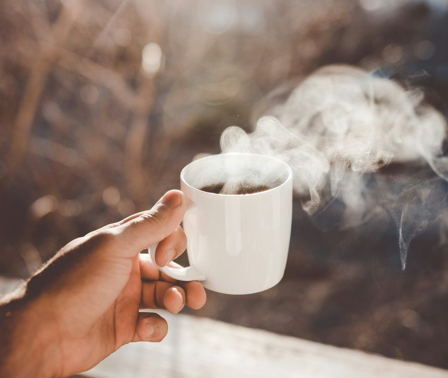
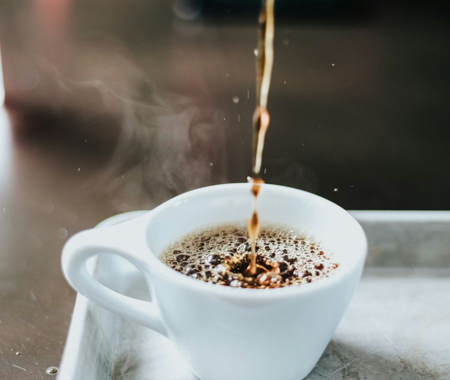
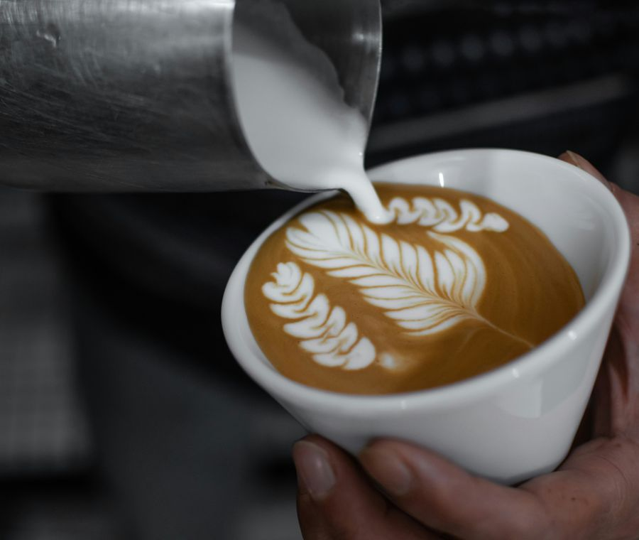
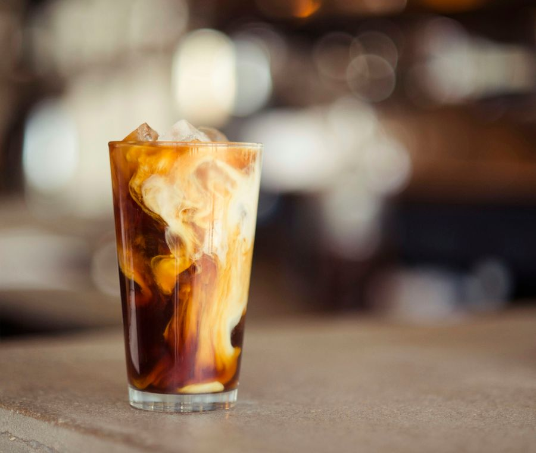
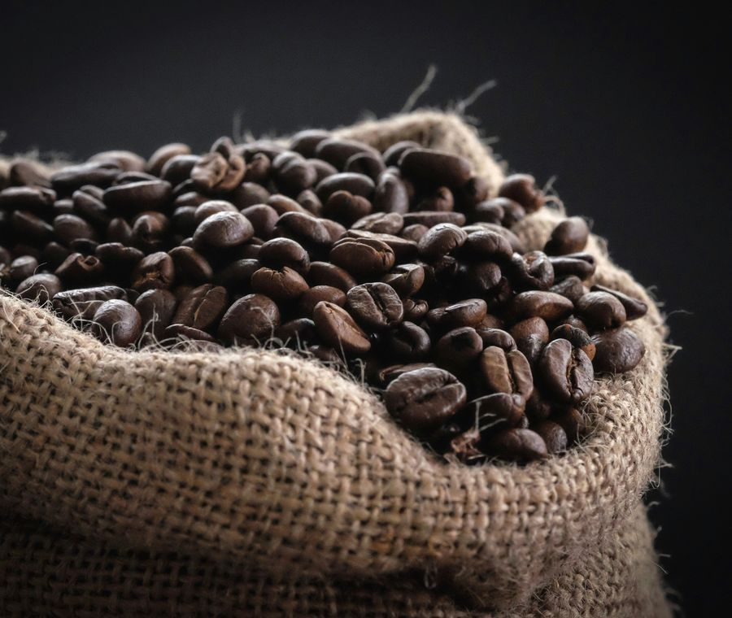
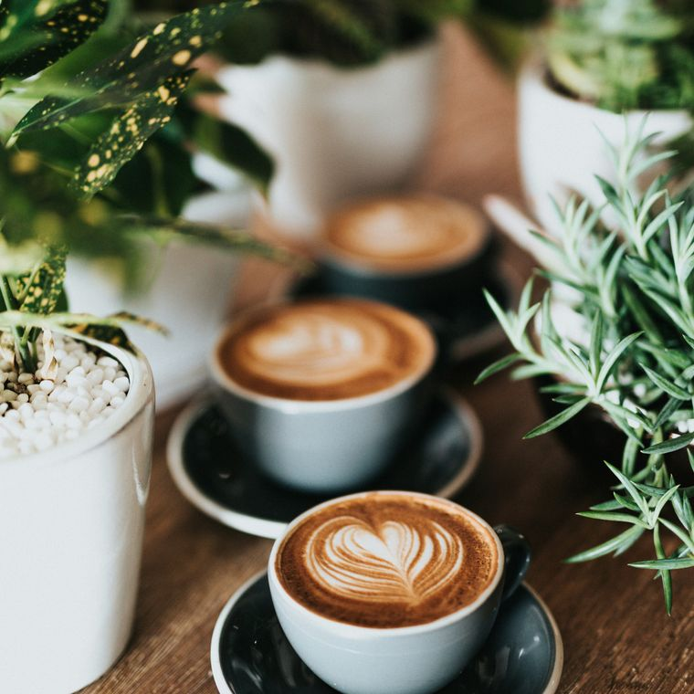

LavadoCajamarca
La Colmena
S/ 68 / 250 g
Panela · mandarina · cacao
Propuesto 2 · Carta
Cada lote viene de una sola finca, se tuesta aquí y se vende en bolsas de 250 g. Filtra por proceso, revisa la ficha y arma tu pedido. El carrito se queda contigo aunque cambies de página.
Tostamos los miércoles 6 lotes

LavadoCajamarca
S/ 68 / 250 g
Panela · mandarina · cacao

Natural Último loteCusco
S/ 76 / 250 g
Fresa · cacao · vino

HoneyAmazonas
S/ 72 / 250 g
Miel · durazno · flor

LavadoPasco · Villa Rica
S/ 62 / 250 g
Chocolate · naranja · nuez

NaturalSan Martín
S/ 58 / 250 g
Ciruela · ron · cacao

HoneyHuánuco
S/ 70 / 250 g
Miel · limón · almendra